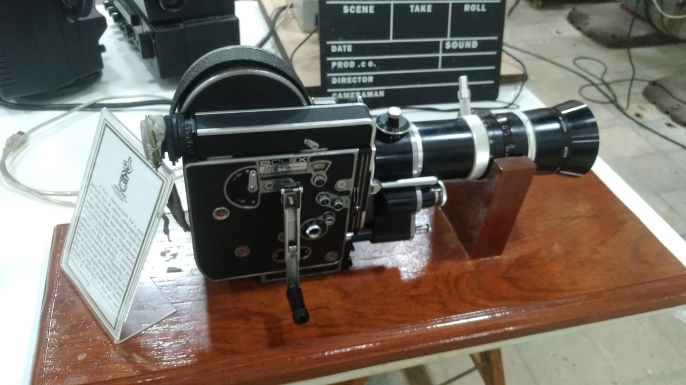

ARTE EM PELÍCULA

"Cada rolo de película guarda não apenas imagens, mas a história física do cinema."
A Magia da Película: Uma Jornada pelo Cinema Analógico
A película cinematográfica, feita de nitrato de celulose (e posteriormente acetato), foi o suporte que revolucionou a narrativa visual do século XX. Nosso acervo preserva raridades como:
- Filmes em 35mm usados nas salas de projeção clássicas
- Câmeras Mitchell dos anos 1940, que rodaram clássicos do cinema nacional
- Curta-metragens em 16mm da era de ouro do cinema experimental

Projetor 35mm anos 1950
Rolos de película preservados

Câmera Mitchell 1947
Curiosidade: Uma única cópia em película de longa-metragem pesava até 30kg e podia conter 3km de filme!
O Desafio da Preservação: Salvando Tesouros do Tempo
"Preservar películas é como congelar a luz em fragmentos de história."
Nosso laboratório de restauro emprega técnicas históricas e digitais para resgatar filmes deteriorados:
| Problema | Solução Técnica |
|---|---|
| Emulsão descascando | Transferência para acetato em câmara fria |
| Fungos | Limpeza química com álcool isopropílico |
| Perda de cor | Digitalização spectral 4K |
Exemplo em Exposição: Fragmentos originais de "Limite" (1931) de Mário Peixoto, primeiro filme de vanguarda brasileiro, recuperados após décadas em latas enferrujadas.
Película vs Digital: A Guerra dos Formatos
"Enquanto o digital oferece precisão, a película oferece alma."
| PELÍCULA (35mm) | DIGITAL (4K) |
|---|---|
| Resolução equivalente a 6K | Máximo de 8K comercial |
| Gama dinâmica de 14 stops | 12-13 stops em câmeras top |
| Textura orgânica (grãos) | Uniformidade artificial |
| Vida útil: 100+ anos* | Obsolescência em 5-10 anos |
*Se armazenada a 12°C e 35% de umidade
Interatividade no Museu: Na nossa Estação de Comparação, visitantes podem assistir à mesma cena filmada em película 35mm e digital 8K para sentir a diferença!